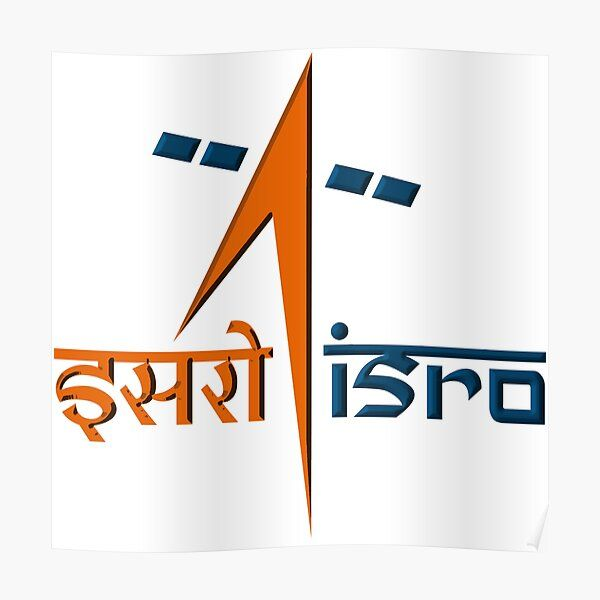

Professional Experience
Building the future, one project at a time
Software Engineer Intern
ClearTax
Bangalore, India
Jan 2025 – Present
- Developing and maintaining scalable full-stack web applications using modern technologies to enhance product performance and user experience.
- Designing and implementing efficient data processing tools, leveraging ML/AI techniques and AWS services to optimize large-scale data analysis.
- Collaborating with cross-functional teams to improve system reliability, scalability, and efficiency while ensuring seamless integration of new features.
React
Node.js
AWS
ML/AI
Software Engineer Intern
School Hack.AI (AIREV.)
Abu Dhabi, UAE
June 2024 – Dec 2024
- Contributed to the development of an On-Demand LLM-Based AI Platform, designed to augment human potential through the power of AI.
- Integrated Azure Cloud Backup Services to enhance system reliability and data security.
- Engineered and deployed a high-performance vector database, transitioning from Pinecone to Qdrant, improving search efficiency and data retrieval.
LLM
Azure
Vector DB
AI

Software Development Fellowship Intern
Indian Space Research Organization (ISRO) – IIRS
Dehradun, India
Feb 2024 – May 2024
- Conducted research and implementation of fuzzy image classification techniques for remote sensing data analysis, improving accuracy in satellite image interpretation.
- Developed automated workflows to process and classify geospatial data, enhancing earth observation applications.
- Worked alongside scientists and engineers to contribute to ongoing ISRO research initiatives in space technology and earth science.
Image Processing
Remote Sensing
Python
Machine Learning
Geospatial Data
Machine Learning Research Intern
RNT Health Insights Pvt. Ltd.
Chandigarh, India
Dec 2023 – Jan 2024
- Developed deep learning models for precise semantic segmentation and detection of gastric polyps in endoscopic images, improving early diagnosis capabilities.
- Conducted extensive data preprocessing and augmentation to enhance the robustness of the model.
- Optimized convolutional neural network (CNN) architectures for improved medical image analysis, achieving greater accuracy and efficiency.
Deep Learning
CNN
PyTorch
Medical Imaging
Computer Vision
Education Journey
Building foundations for innovation
Dr. B R Ambedkar National Institute of Technology
Bachelor of Technology (B.Tech.)
Electronics and Communication Engineering
- Developed a strong foundation in data structures, algorithms, software development, and cloud computing.
- Gained hands-on experience with full-stack development, machine learning, and scalable system design.
- Actively participated in coding competitions, open-source projects, and AI-driven research initiatives.
Data Structures
Cloud Computing
Machine Learning
Dr. Virendra Swarup Education Center
Higher Secondary Education
Mathematics & Computer Science
- Built strong analytical and problem-solving skills through competitive programming and algorithmic problem-solving.
- Participated in various mathematics and science olympiads.
- Developed leadership skills through academic and extracurricular activities.